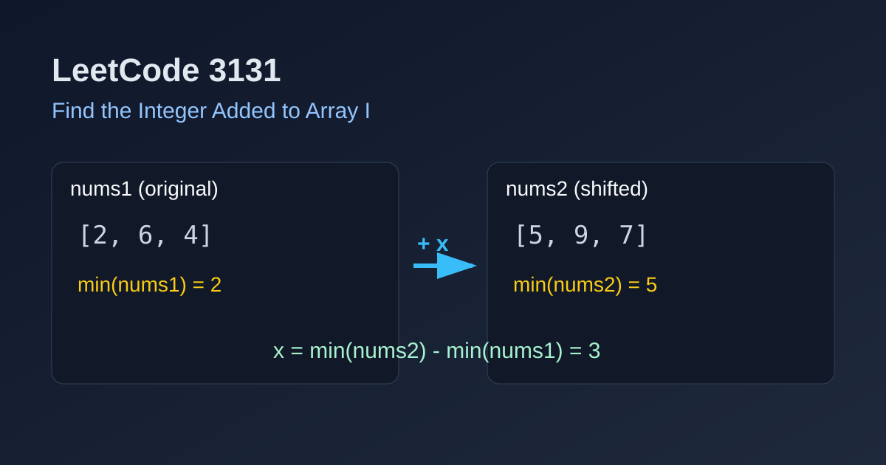

LeetCode 3131: Find the Integer Added to Array I (Minimum-Alignment Difference)
LeetCode 3131ArrayMathMinimum DifferenceToday we solve LeetCode 3131 - Find the Integer Added to Array I.
Source: https://leetcode.com/problems/find-the-integer-added-to-array-i/

English
Problem Summary
You are given two integer arrays nums1 and nums2 of equal length. Every element in nums2 is formed by adding the same integer x to each element in nums1. Return x.
Key Insight
Adding the same value shifts the whole array by a constant offset, so relative order after sorting is preserved. In particular, the minimum value in nums2 equals minimum value in nums1 plus x.
Method
Compute min(nums1) and min(nums2), then return their difference:
x = min(nums2) - min(nums1).
Complexity Analysis
Time: O(n).
Space: O(1).
Reference Implementations (Java / Go / C++ / Python / JavaScript)
class Solution {
public int addedInteger(int[] nums1, int[] nums2) {
int min1 = Integer.MAX_VALUE;
int min2 = Integer.MAX_VALUE;
for (int v : nums1) min1 = Math.min(min1, v);
for (int v : nums2) min2 = Math.min(min2, v);
return min2 - min1;
}
}func addedInteger(nums1 []int, nums2 []int) int {
min1, min2 := nums1[0], nums2[0]
for _, v := range nums1 {
if v < min1 {
min1 = v
}
}
for _, v := range nums2 {
if v < min2 {
min2 = v
}
}
return min2 - min1
}class Solution {
public:
int addedInteger(vector<int>& nums1, vector<int>& nums2) {
int min1 = *min_element(nums1.begin(), nums1.end());
int min2 = *min_element(nums2.begin(), nums2.end());
return min2 - min1;
}
};class Solution:
def addedInteger(self, nums1: List[int], nums2: List[int]) -> int:
return min(nums2) - min(nums1)var addedInteger = function(nums1, nums2) {
let min1 = Math.min(...nums1);
let min2 = Math.min(...nums2);
return min2 - min1;
};中文
题目概述
给定两个等长整数数组 nums1 和 nums2。已知 nums2 中每个元素都等于 nums1 对应元素加上同一个整数 x。求这个 x。
核心思路
对数组整体加同一个常数，只会整体平移，不会改变排序后的相对关系。特别地，最小值也会同步平移：
min(nums2) = min(nums1) + x，所以 x = min(nums2) - min(nums1)。
做法
线性扫描分别求出两个数组最小值，最后相减即可。
复杂度分析
时间复杂度：O(n)。
空间复杂度：O(1)。
多语言参考实现（Java / Go / C++ / Python / JavaScript）
class Solution {
public int addedInteger(int[] nums1, int[] nums2) {
int min1 = Integer.MAX_VALUE;
int min2 = Integer.MAX_VALUE;
for (int v : nums1) min1 = Math.min(min1, v);
for (int v : nums2) min2 = Math.min(min2, v);
return min2 - min1;
}
}func addedInteger(nums1 []int, nums2 []int) int {
min1, min2 := nums1[0], nums2[0]
for _, v := range nums1 {
if v < min1 {
min1 = v
}
}
for _, v := range nums2 {
if v < min2 {
min2 = v
}
}
return min2 - min1
}class Solution {
public:
int addedInteger(vector<int>& nums1, vector<int>& nums2) {
int min1 = *min_element(nums1.begin(), nums1.end());
int min2 = *min_element(nums2.begin(), nums2.end());
return min2 - min1;
}
};class Solution:
def addedInteger(self, nums1: List[int], nums2: List[int]) -> int:
return min(nums2) - min(nums1)var addedInteger = function(nums1, nums2) {
let min1 = Math.min(...nums1);
let min2 = Math.min(...nums2);
return min2 - min1;
};
Comments